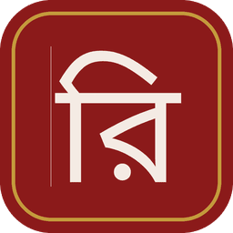

वि दे ह
🔍 स्थानीय खोज — ऑडियो-वीडियो लिंक, शीर्षक खोजू

विदेह डोक्यूमेन्टरी/ नाटक VIDEHA DOCUMENTARY/ DRAMA
खोलू
मैथिलीक एकटा समानान्तर व्याकरण, रचना आ भाषा विज्ञान (ठेठी, अंगिका आ बज्जिकाकेँ संग लऽ कऽ)- गजेन्द्र ठाकुर
विदेह डोक्यूमेन्टरी/ नाटक VIDEHA DOCUMENTARY/ DRAMA
विदेह नाट्य उत्सव
Animated Drama
Videha Parallel History of Mithila & Maithili Literature
Bhamati Documentary
Atmatattvaviveka Documentary
Nyayakusumanjali Documentary
Tattvachintamani Documentary
भामती डॉक्यूमेन्टरी
आत्मतत्त्वविवेक डॉक्यूमेन्टरी
न्यायकुसुमाञ्जलि डॉक्यूमेन्टरी
तत्त्वचिन्तामणि डॉक्यूमेन्टरी
Read Aloud & Sign Language
Videha eLearning
Gajendra Thakur
Accessible Videha
🧠 विदेह नाट्य उत्सव · विदेह दृश्य-श्रव्य क्विज · विदेह चित्रकला · कला · संगीत प्रश्नोत्तरीक्विज खोलू
विदेह नाट्य उत्सव प्रश्नोत्तरी
विदेह दृश्य-श्रव्य प्रश्नोत्तरी
विदेह चित्रकला · कला · संगीत प्रश्नोत्तरी
विदेह सम्मान प्रश्नोत्तरी
विदेह प्रश्नोत्तरी
विदेह १-४४० विस्तृत अध्ययन▶
कला आ संगीत▶
दृश्य-श्रव्य साहित्य/अध्ययन▶
ब्रेल साहित्य आ मूक-वधिर लेल साहित्य▶
मिथिला चित्रकला▶
मिथिलाक नाच-पार्टी सभ — विदेह क्विज▶
विदेह-सदेह १-३७ विस्तृत अध्ययन▶
मैथिली विकिपीडिया, विदेह, तिरहुता आ गजेन्द्र ठाकुर▶
मिथिलाक इतिहास▶
नाटक आ रंगमंच▶
नारी / स्त्री विमर्श▶
बाल साहित्य▶
विदेह मिथिला मैथिली आलोचना/ परिचर्चा शृंखला 1118 Audio & 1344 Video files खोलू
PART 1 [190 Audio & 185 Video files]▶
PART 2 [80 Audio & 39 Video files]▶
PART 3 [20 Audio & 24 Video files]▶
PART 4 [28 Audio & 34 Video files]▶
PART 5 [101 Audio & 134 Video files]▶
PART 6 [45 Audio & 58 Video files]▶
PART 7 [63 Audio & 76 Video files]▶
PART 8 [48 Audio & 48 Video files]▶
PART 9 [176 Audio & 172 Video files]▶
PART 10 [141 Audio & 300 Video files]▶
PART 11 [226 Audio & 152 Video files]▶
PART 12 [0 Audio & 122 Video files]▶
MITHILA HERITAGE QUIZIndia–Nepal Mithila Heritage · 56 क्विज खोलू
भारत · नेपाल — Mithila Heritage Quiz
Cultural Heritage OF Mithila QUIZ Level 1▶
Cultural Heritage OF Mithila QUIZ Level 2▶
Cultural Heritage OF Mithila QUIZ Level 3▶
Cultural Heritage OF Mithila QUIZ Level 4▶
Decoding THE Panji OF Mithila Volume I▶
Decoding THE Panji OF Mithila Volume II▶
Decoding THE Panji OF Mithila Volume III▶
Decoding THE Panji OF Mithila Volume III Level 2▶
Decoding THE Panji OF Mithila Volume II Level 2▶
Decoding THE Panji OF Mithila Volume IV▶
Decoding THE Panji OF Mithila Volume V▶
Decoding THE Panji OF Mithila Volume VI▶
Decoding THE Panji OF Mithila Volume VI Level 2▶
Decoding THE Panji OF Mithila Volume V Level 2▶
Gangesh Upadhyaya▶
Grierson Maithili Chrestomathy Vocabulary▶
Grierson Maithili Chrestomathy Vocabulary Level 2▶
Grierson Maithili Grammar▶
Grierson Maithili Grammar Level 2▶
History OF Maithili Literature VOL1▶
History OF Mithila▶
History OF Navya-Nyaya IN Mithila▶
History OF Navya-Nyaya IN Mithila Level 2▶
Jagat Prakash MALL▶
Maithili Ghazal Grammar History▶
Maithili WEB Journalism History▶
Mithila ART AND Architecture▶
Mithila ART AND Architecture Level 2▶
Mithila IN India▶
Mithila IN India Level 2▶
Mithila IN THE AGE OF Vidyapati▶
Mithila IN THE AGE OF Vidyapati Level 2▶
Mithila Rising▶
Mithila Rising Level 2▶
Mithila Under THE Karnatas▶
Mithila Under THE Karnatas Level 2▶
Parallel History TOME I▶
Parallel History TOME II▶
Parallel History TOME III▶
Parallel History TOME IV▶
Political Cultural Heritage Mithila▶
Sarva Darsana Samgraha▶
Studies IN Jainism AND Buddhism IN Mithila▶
Studies IN Jainism AND Buddhism IN Mithila Level 2▶
Survey OF Maithili Literature▶
Tattva-Chintamani▶
Tattva-Chintamani Level 2▶
Temples OF Mithila▶
Temples OF Mithila Level 2▶
Trends OF Linguistic Analysis IN Indian Philosophy▶
Trends OF Linguistic Analysis IN Indian Philosophy Level 2▶
Vachaspati Mishra▶
Vidyapati A Political Analysis▶
Vidyapati A Political Analysis Level 2▶
Vidyapati Ramanath JHA▶
Vidyapati Ramanath JHA Level 2▶
🛠️विदेह दृश्य-श्रव्य औजार · Dubbing, Natak, Cinema, Art & Music Tools
15 browser-only offline toolsखोलू
नाटक, मंच, ऑडियो-वीडियो, उपशीर्षक, मिथिला चित्रकला, पोस्टर, लोकगीत आ ताल अभ्यास लेल browser-only औजार। Tool files GitHub Pages prefix सँ खुलत।
दृश्य-श्रव्य औजार
Natak Script Writer · नाटक लेखन औजार
Scene/dialogue/stage directions; TXT/HTML export
Stage Blocking Planner · मंच-गतिविधि मानचित्र
Drag actors/props on stage; PNG export
Character & Costume Planner · पात्र/वेश योजना
Character, costume, props and voice notes
Radio Drama Audio Recorder · श्रव्य नाटक रेकॉर्डर
Browser-only recording for voice, song and dialogue
Subtitle / SRT Maker · उपशीर्षक निर्माण
Create SRT subtitles from dialogue/time notes
Mithila Art Pattern Designer · मिथिला चित्रकला
Pattern templates, drawing canvas and PNG export
Event Poster / Invitation Maker · निमंत्रण पोस्टर
Design poster/invitation cards for events
Folk Song / Taal Notebook · लोकगीत-ताल नोटबुक
Lyrics, taal, tempo and performance notes
Audio-Video Link Catalogue · लिंक सूची आयोजक
Organize YouTube, archive and resource links
डबिंग · नाट्य उत्सव · सिनेमाघर — नव standalone tools
विदेह मैथिली डबिंग/ सबटाइटल स्टूडियो
YouTube/local media player, मैथिली dialogue, SRT/WebVTT, voice recording, project JSON
विदेह मैथिली नाट्य उत्सव
मैथिली/विश्व रंगमंच सूची, theatre player, stage dialogue, dubbing, subtitles, rehearsal notes
विदेह मैथिली सिनेमाघर
मैथिली film/open movie/public-domain cinema list, player, dubbing, subtitles, voice-over
🎙️मोबाइल मैथिली फिल्म · रेडियो-नाटक · ए.आइ. उत्पादन औजार
15 standalone browser toolsखोलू
मोबाइल सँ low-cost film, मैथिली radio-play, authorized voice bank/voice-cloning consent workflow, audio/video cutter-joiner, simple editing, radio station, TV station, YouTube Live TV Station, Videha Radio आ Videha Television लेल browser-only/standalone औजार। Voice facility केवल अनुमति प्राप्त कलाकार/स्वयं केर आवाज लेल।
Film · Radio · AI · Voice · Editing
YouTube Live TV Station · चार चैनल
Accessible Videha, Videha eJournal, Gajendra Thakur, Videha eLearning — playlists, courses, podcasts showcase
♿विदेह सुगमता औजार · Accessibility Tools
14 browser-only offline toolsखोलू
दृष्टिबाधित पाठक/ब्रेल/TTS आ मूक-बधिर/श्रवण-बाधित पाठक-दर्शक लेल आयु/जीवन-स्थिति अनुसार browser-only औजार: शिशु, बाल, किशोर, वयस्क, महिला आ वृद्धजन। Tool files GitHub Pages prefix सँ खुलत।
दृष्टिबाधित पाठक/ब्रेल/TTS · शिशु, बाल, किशोर, वयस्क, महिला, वृद्धजन
Braille + TTS Reader · दृष्टिबाधित पाठक मुख्य औजार
देवनागरी/मैथिली पाठ सुनू, Unicode Braille अभ्यास, पैघ अक्षर, contrast, reading-guide, TXT export.
Shishu Audio Story Reader · शिशु श्रव्य कथा-पाठक
नन्हा कथा, कविता, लोरी आ अक्षर-अभ्यास केँ पैघ अक्षर आ आवाजमे सुनबाक औजार।
Bal Braille Akshar Practice · बाल ब्रेल-अक्षर अभ्यास
देवनागरी अक्षर, मात्रा, शब्द आ सरल वाक्यक श्रव्य अभ्यास; Unicode Braille-जैका स्पर्श-अभ्यास पंक्ति।
Kishor Study Audio Quiz Notebook · किशोर अध्ययन श्रव्य नोटबुक
पाठ, प्रश्न, उत्तर, मुख्य बिंदु आ पुनरावृत्ति केँ सुनबाक/सहेजबाक अध्ययन औजार।
Adult Document TTS Reader · वयस्क दस्तावेज श्रव्य-पाठक
लम्बा लेख, पत्र, सूचना, ई-पाठ आ दस्तावेज केँ सुनबाक, खण्ड-खण्ड करबाक आ print/export करबाक औजार।
Women Audio Safety & Notes · महिला श्रव्य सहायता-पोथी
सुरक्षा-संदेश, स्वास्थ्य-सूचना, घरेलू नोट, कार्यक्रम निर्देश आ जरूरी वाक्य केँ आवाजमे सुनबाक औजार।
Old Age Large Text Voice Reader · वृद्धजन पैघ-पाठ आवाज पाठक
बहुत पैघ अक्षर, उच्च contrast, reading ruler, धीमा TTS आ दैनिक नोट पढ़बाक सरल औजार।
मूक-बधिर / श्रवण-बाधित · शिशु, बाल, किशोर, वयस्क, महिला, वृद्धजन
Caption + Visual Communication Toolkit · मूक-बधिर मुख्य औजार
बड़ दृश्य-संदेश, phrase board, SRT/VTT captions, शांत visual alert, कार्यक्रम cue-sheet.
Shishu Visual Cards · शिशु दृश्य-कार्ड संवाद
चित्र-जैका रंगीन कार्ड, भाव, जरूरत आ छोट शब्द केँ स्क्रीनपर पैघ देखेबाक औजार।
Bal Sign Vocabulary Practice · बाल संकेत-शब्दावली अभ्यास
शब्द-card, अर्थ, संकेत-वर्णन, मिलान खेल आ visual quiz लेल सरल अभ्यास-पट्ट।
Kishor Caption Study Board · किशोर caption अध्ययन-पट्ट
वीडियो/कक्षा नोटक caption, timeline, visual summary, प्रश्नोत्तर आ SRT/VTT मसौदा।
Adult Communication Board · वयस्क दृश्य-संवाद बोर्ड
कार्यालय, यात्रा, बैंक, अस्पताल, कार्यक्रम आ परिवारिक संवाद लेल पैघ text-card आ print sheet।
Women Visual Safety Cards · महिला दृश्य-सुरक्षा कार्ड
सुरक्षा, स्वास्थ्य, यात्रा, सहायता, परिवार/पुलिस/डॉक्टर संपर्क लेल तुरन्त देखाबय योग्य visual cards।
Old Age Care Communication Board · वृद्धजन देखभाल दृश्य-बोर्ड
दर्द, दवाई, भोजन, डॉक्टर, परिवार, आराम आ दैनिक देखभाल लेल पैघ दृश्य-संवाद कार्ड।
🔎
खोज आ इण्डेक्सSearch & Videha-Sadeha Index
Search for Audio-Video related information (including Print, Audio-Visual & Sign Language) relating to Mithila/ Maithili
"Videha" Ist Maithili Fortnightly ejournal Archive of Audios-Videos ' विदेह ' प्रथम मैथिली पाक्षिक ई पत्रिका ऑडियो- वीडियो आर्काइव मैथिली ऑडियो- वीडियोक संकलन (पूर्णतः अव्यवसायिक उद्देश्य आ मात्र एकेडमिक प्रयोग लेल) ऑडियो- वीडियो देखबाक लेल सबधित लिककें क्लिक करू। For viewing audios-videos click the respective links.
🎭
नाटक, रंगमंच आ नाट्य पोथीTheatre · Drama Books · Videha Issues
प्राचीन नाटक / अंकिया नाट / Classical Maithili Theatre
१उपाध्याय रामदास — आनन्द विजयाभिदान नाटिकाDownload ↓
२उमापति — पारिजात हरणDownload ↓
३कान्हा रामदास — गौरीस्वयंवरDownload ↓
४जगत्ज्योतिर्रमल्ल — हरगौरी विवाह नाटक कुञ्जविहार नाटकDownload ↓
५जगत्प्रकाशमल्ल — प्रभावतीहरण नाटकDownload ↓
६ज्योतिरीश्वर ठाकुर (सौजन्य- डिजिटल लाइब्रेरी ऑफ इण्डिया) — मैथिली धूर्तसमागमDownload ↓
७देवानन्द — उषाहरणDownload ↓
८दैत्यारि ठाकुर — श्यामंत हरण यात्रा (अंकिया नाट)Download ↓
९नन्दीपति — कृष्णकेलिमालाDownload ↓
१०नन्दीपति — गीतमालाDownload ↓
११भानुनाथ — प्रभावती हरणDownload ↓
१२माधवदेव — भूमि लुटिया झुमुरा आ पिम्परा-गुचुरा-झुमुराDownload ↓
१३रत्नपाणि — उषाहरण नाटकDownload ↓
१४रमापति — रुक्मणी परिचयDownload ↓
१५लक्ष्मीदेव — कुमारहरण नाट शत स्कंध रावण वध (अंकिया नाट)Download ↓
१६लाल — गौरीस्वयंवर नाटकDownload ↓
१७विद्यापति ठक्कुरः (१३४०-१४३५) [मैथिलीक आदि कवि ज्योतिरीश्वर-पूर्व विद्यापतिसँ भिन्न, संस्कृत आ अवहट्ठमे लेखन] — गोरक्षविजयम्Download ↓
१८शंकरदेव — पारिजातहरणDownload ↓
१९शंकरदेव — रामविजयDownload ↓
२०शिवदत्त — गौरीपरिणय सीतास्वयंवर दुर्गाविजयDownload ↓
२१शिवदत्त — पारिजात नाटकDownload ↓
२२शिवदत्त — कथा बौद्ध सिद्ध मेहथपाDownload ↓
२३शिवदत्त — सखुआवालीDownload ↓
२४श्रीकांत — श्रीकृष्ण जन्म रहस्यDownload ↓
२५सिद्ध नरसिंहमल्ल — गीतावली सिद्धिDownload ↓
२६हर्षनाथ झा — माधवानन्द नाटकDownload ↓
२७हर्षनाथ झा — उषाहरणDownload ↓
विदेह पोथी सँ नाटक/नाट्य/एकांकी पोथी
उपाध्याय रामदास — आनन्द विजयाभिदान नाटिकाDownload ↓जगत्ज्योतिर्रमल्ल — हरगौरी विवाह नाटक कुञ्जविहार नाटकDownload ↓जगत्प्रकाशमल्ल — प्रभावतीहरण नाटकDownload ↓दैत्यारि ठाकुर — श्यामंत हरण यात्रा (अंकिया नाट)Download ↓रत्नपाणि — उषाहरण नाटकDownload ↓लक्ष्मीदेव — कुमारहरण नाट शत स्कंध रावण वध (अंकिया नाट)Download ↓लाल — गौरीस्वयंवर नाटकDownload ↓शिवदत्त — पारिजात नाटकDownload ↓हर्षनाथ झा — माधवानन्द नाटकDownload ↓प्रबोध नारायण सिंह (सौजन्य- नचिकेता) — प्रेमक रोग (नाटक)Download ↓आनन्द कुमार झा — टाकाक मोल (नाटक)Download ↓आनन्द कुमार झा — कलह (नाटक)Download ↓आनन्द कुमार झा — बदलैत समाज (नाटक)Download ↓आनन्द कुमार झा — धधाइत नवकी कनियाँक लहास (नाटक)Download ↓आनन्द कुमार झा — हठात् परिवर्तन (नाटक)Download ↓आनन्द कुमार झा — मुक्ति यात्रा (नाटक)Download ↓इलारानी सिंह (सौजन्य- नचिकेता) — प्रेम- एक कविता (अनूदित नाटक)Download ↓डॉ. उदय नारायण सिंह "नचिकेता" (सौजन्य- नचिकेता) — जनक आ' अन्यान्य एकांकीDownload ↓डॉ. उदय नारायण सिंह "नचिकेता" (सौजन्य- नचिकेता) — नाटक क लेलDownload ↓डॉ. उदय नारायण सिंह "नचिकेता" (सौजन्य- नचिकेता) — प्रियंवदा (एकांकी)Download ↓कुणाल (सौजन्य कुणाल) — कुसमा-सलहेस आ अन्य छओ गोट नाटकPDF ↓डॉ. गंगेश गुंजन (सौजन्य- गंगेश गुंजन) — प्रथम-चौबटिया-नाटक (बुधिबधिया)Download ↓डॉ. गंगेश गुंजन (सौजन्य- गंगेश गुंजन) — नाटक आइ भोरDownload ↓अभिज्ञानशाकुन्तलम् (महाकवि कालिदास); आगमडम्बरम् -जयन्त भट्ट; भगवदज्जुकम् -बोधायन; कवि भल्लट- भल्लट-शतक (भल्लटक शत अन्योक्ति), महाकवि क्षेमेन्द्र- छल-कौशलक विलास (कलाविलास), कवि नीलकण्ठ- कलियुग-विडम्बना (व्यंग्य); चतुर्भाण- श्री शूद्रक केर मूल संस्कृत- पद्मप्राभृतकम् (कमलक भेंट), ईश्वरदत्तक मूल संस्कृत- धूर्तविटसंवादः (धूर्त आ दलालक विचार-विमर्श), वररुचिक मूल - उभयाभिसारिका (परस्पर प्रेम-पलायन) आ महाकवि श्यामिलक केर मूल संस्कृत- पादताडितकम् (लात); दामक प्रहसनम् (सम्भवतः भास रचित); हास्यक सागर / हास्यार्णवप्रहसनम् (मूल संस्कृत प्रहसन श्री जगदीश्वर भट्टाचार्य्य); कादम्बरी (वाणभट्ट आ भूषणभट्ट); माटिक खेलौना-गाड़ी / मृच्छकटिकम् (शूद्रक रचित संस्कृत नाटक); मत्तविलास प्रहसनम् (पल्लव नरेश श्री महेन्द्रविक्रम वर्मा प्रथम केर मूल संस्कृत प्रहसन); मंत्री राक्षसक राजसी मोहर / मुद्राराक्षसम् (विशाखदत्त रचित संस्कृत नाटक); पालाण्डुमण्डन प्रहसनम् (हरिजीवन मिश्रक संस्कृत प्रहसन); उत्तररामचरितम् (महाकवि भवभूति) - संस्कृतसँ मैथिली अनुवाद गजेन्द्र ठाकुरPDF ↓अनुवाद (मैथिली) - गजेन्द्र ठाकुर (अनुवादक): — 41. भूत-प्रेतक नाट्यशाला, (बाल साहित्य), (2022)PDF ↓गजेन्द्र ठाकुर — ए.आइ. सँ वीडियो बनाउPDF ↓गजेन्द्र ठाकुर — मैथिली रेडियो नाटक (स्वयं सीखू मार्गदर्शिका)PDF ↓गजेन्द्र ठाकुर — 2. बाल मण्डली/ किशोर जगत (बाल नाटक, लघुकथा, कविता आदि) (बाल साहित्य), (2009)Download ↓गजेन्द्र ठाकुर — 4. संकर्षण (नाटक) (2009)Download ↓गजेन्द्र ठाकुर — 22. जलोदीप (बाल-नाटक संग्रह), (बाल साहित्य), (2012)Download ↓गजेन्द्र ठाकुर — 25. भऽ जाएब छू (मैथिलीक 2012 मे प्रकाशित पहिल क्लाइमेट-फिक्शन प्ले- Maithili's first climate-fiction play originally published in 2012), (बाल साहित्य), (2012)PDF ↓गजेन्द्र ठाकुर — 30. मचण्ड (नाटक) (2014)Download ↓गजेन्द्र ठाकुर — 46. गंगा ब्रिज (नाटक) (2023)Download ↓गजेन्द्र ठाकुर — 47. उल्कामुख (नाटक) (2023)Download ↓जगदीश प्रसाद मण्डल — बीरांगना (एकांकी) २०१७Download ↓बेचन ठाकुर (सौजन्य- बेचन ठाकुर) — बेटीक अपमान आ छीनरदेवी (नाटक)Download ↓बेचन ठाकुर (सौजन्य- बेचन ठाकुर) — बाप भेल पित्ती आ अधिकार (नाटक)Download ↓बेचन ठाकुर (सौजन्य- बेचन ठाकुर) — बिसवासघात (नाटक)Download ↓बेचन ठाकुर (सौजन्य- बेचन ठाकुर) — ऊँच-नीच (नाटक)Download ↓बेचन ठाकुर (सौजन्य- बेचन ठाकुर) — भोँट (नाटक)Download ↓बेचन ठाकुर (सौजन्य- बेचन ठाकुर) — नबघर (चारिटा नाटक)PDF ↓मुन्ना जी — तीन टा बाल नाटक (मैथिली बाल साहित्य)Download ↓योगेन्द्र पाठक "वियोगी" (सौजन्य- योगेन्द्र पाठक "वियोगी") — रोबोट (अनूदित साइंस-फिक्शन नाटक)PDF ↓रवि भूषण पाठक — रिहर्सल (नाटक)Download ↓राजदेव मण्डल — लाज (एकांकी)Download ↓डॉ. राम भरोस कापड़ि 'भ्रमर' (सौजन्य- राम भरोस कापड़ि 'भ्रमर') — महिषासुर मुर्दावाद एवं अन्य नाटक (१९९७)Download ↓डॉ. राम भरोस कापड़ि 'भ्रमर' (सौजन्य- राम भरोस कापड़ि 'भ्रमर') — लोक नाट्य: जट जटिन (२००७) (शोध)Download ↓डॉ. राम भरोस कापड़ि 'भ्रमर' (सौजन्य- राम भरोस कापड़ि 'भ्रमर') — भैया अएलै अपन सोराज (नाटक संग्रह) (२०१०)Download ↓डॉ. राम भरोस कापड़ि 'भ्रमर' (सौजन्य- राम भरोस कापड़ि 'भ्रमर') — सूली पर इजोत एवं अन्य नाटक (२०१५)Download ↓डॉ. राम भरोस कापड़ि 'भ्रमर' (सौजन्य- राम भरोस कापड़ि 'भ्रमर') — रामभरोस कापड़ि "भ्रमर"क किछु नाटकDownload ↓लल्लन प्रसाद ठाकुर (१९५३-१९९५) (सौजन्य- कुसुम ठाकुर) — नाटककार लल्लन प्रसाद ठाकुर समग्र रचनावली (५ टा नाटक, ४ टा एकांकी आ ३ टा गीति नाटिका सहित)PDF ↓विभा रानी — विभा रानीक दूटा नाटक (भाग रौ आ बलचन्दा)Download ↓सुशील (सौजन्य- सुशील) — भामती (नाटक) (पहिल मंचन १९९१, प्रकाशन २०१३)Download ↓
विदेह/सदेह अंक आ नाट्य/नाटक विशेष सामग्री
विदेह : सदेह ८ — मैथिली नाट्य उत्सव देवनागरी मिथिलाक्षर — देवनागरीPDF ↓विदेह : सदेह ८ — मैथिली नाट्य उत्सव देवनागरी मिथिलाक्षर — मिथिलाक्षरPDF ↓५) नाटक विशेषांक अंक ७२ (15 दिस 2010) — अंक ७२ (15 दिस 2010)PDF ↓३. मुन्नी कामतक एकांकी "जिन्दगीक मोल"पर गजेन्द्र ठाकुरक टिप्पणी VIDEHA_354 — VIDEHA_354PDF ↓१०. नन्द विलास रायक चारि कथा आ एक एकांकी आ गजेन्द्र ठाकुरक टिप्पणी Videha_361 — Videha_361PDF ↓
🦻
ऑडियो बुक · रीड-अलाउड · संकेत भाषाAudiobooks · Read-Aloud · Sign Language
मिथिलाक सभ जाति आ धर्मक संस्कार , लोकगीत आ व्यवहार गीत (सौजन्य: उमेश मंडल)
Audiobooks (English Translation of Maithili Literature)
The Science of Words (2023) Audiobook▶Echoes of Existence (2025) Audiobook▶Flowers Blooming on a Withered Tree (2025) Audiobook▶Struggles of Life (2026) Audiobook▶The Comet's Coma: Lost in the Frozen Clouds (2026) Audiobook▶The Coconut Fortress (2026) Audiobook▶The Black Bee is Sleeping Atop the Mountain (2026) Audiobook▶Maithili Web Journalism's History (2023, 2026) Audiobook▶A Bridge Built for the Sake of Love (2024, 2026) Audiobook▶Setushama- Vibrant Maithili (2026) Audiobook▶मैथिली ऑडियो बुक्स▶Videha Read Aloud Talking Maithili Audio Books▶https://bloomlibrary.org/player/Wcf6zr5CoF▶https://bloomlibrary.org/player/p3sHdYBgiT▶https://bloomlibrary.org/player/f19pSdhGMo▶https://bloomlibrary.org/player/b2l5wesxCp▶https://bloomlibrary.org/player/dAzC0Fubt7▶
🪧
मैथिली सीखू · संकेत भाषाLearn Maithili · Sign Language · Conversations
NCERT BHASHA SANGAM
🎬
मैथिली फिल्म आ रंगमंचMaithili Film & Theatre · Minap · Mailorang
बृखेश चन्द्र लाल , जनकपुरक सौजन्यसँ
पवनकान्त झा (काश्यप कमल) , भटसिमरि , मधुबनीक सौजन्यसँ
गुवाहाटी अन्तर्राष्ट्रीय मैथिली सम्मेलन आ विद्यापति पर्व २०११
मैथिली फिल्म
चौबटिया (सौजन्य- धीरेन्द्र प्रेमर्षि)
सौभाग्य मिथिला
मिनाप-१
मैलोरंग-१ ( सौजन्य- प्रकाश झा)
📺
यू-ट्यूब चैनल आ रेडियोYouTube Channels · Radio · Podcast
प्यारे मैथिल चैनल- किरण चौधरी आ संगीता आनन्द▶मिथिरंग लोक तरंग▶मिथिला चैप्टर▶खिस्सा-पिहानी नेना भुटका लेल▶मिनाप▶मैलोरंग▶मिथिलांगन▶भंगिमा▶मैथिली रंगमंच▶कोकिल मंच▶मिथिला दर्शन▶मिथिला मिरर▶स्मृति एंटरटेनमेंट▶BEJOD▶अचल चित्र▶नीलम मैथिली▶मैथिली गंगा▶मिथिला जंक्शन▶मैथिली क्लास▶मैथिली समाचार ( जनता टेलीविजन )▶मैथिली टॉक्स▶अप्पन टी . वी .▶टी . वी . टुडे , जनकपुर▶दृश्यम मीडिया▶संस्कार मिथिला▶सारेगामा मैथिली▶नवरस मीडिया▶ज्योति एंटरटेनमेंट▶इजोरिया फिल्म्स▶अयोध्यानाथ चौधरी▶रेडियो जनकपुर▶मिथिला टी . वी .▶मधुर मैथिली▶मैथिली - नेपाली सीखू▶अपन मैथिली▶मैथिली पाठ▶सुरेन्द्र राउत▶मिथिलांचल▶अमित झा▶प्रवेश मल्लिक▶आदित्य फिल्म्स एण्ड म्यूजिक▶नेपाल टेलीविजन▶आकाशवाणी मैथिली समाचार▶आकाशवाणी अमृत महोत्सव▶रश्मि दत्त▶प्रिया मल्लिक▶अनामिका झा▶रफ कट्स , नचिकेता▶कुञ्ज बिहारी▶राम बाबू झा▶वी . जे ., विकास झा▶तिरहुत मिथिला▶आइ लव मिथिला▶लोक कला केन्द्र▶रजनी पल्लवी▶पूनम मिश्र▶रंजना झा▶जूली झा▶मैथिली ठाकुर▶अनुपम मिश्र पॉडकास्ट एपीसोड ४० कीर्तिनाथ झा▶ब्लूम लाइब्रेरी मैथिली▶अरिपन फाउण्डेशन▶Pratham Books Maithili Storyweaver▶जानकी एफ.एम समाचार▶आकाशवाणी दरभंगा यू ट्यूब चैनल▶I Love Mithila▶online maithili journal▶owner I Love Mithila▶
🎵
गीत · गजलVidyapati Geet · Govinddas · Maithili Ghazal
विद्यापति गीत
गीत-गोविन्ददास (गायन दीक्षा भारती)
मैथिली गजल (गजल- गजेन्द्र ठाकुर , गायन दीक्षा भारती)
🪔
सगर राति दीप जरय आ नाट्य उत्सवLiterary Nights & Drama Festivals
७१म सगर राति दीप जर य (०२ अक्टूबर २०१०) , गाम बेरमा , जिला मधुबनी (संयोजक- जगदीश प्रसाद मंडल)
८२म सगर राति दीप जरय (३१ मई २०१४) गाम मेंहथ, जिला मधुबनी (संयोजक- गजेन्द्र ठाकुर)
82 म सगर राति दीप जरए , स्थान- गजेन्द्र ठाकुर जीक निज आवास , गाम- मेंहथ , जिला- मधुबनी। दिनांक- 31 मई 2014 ( शनि दिन) , समए- संध्या छह बजेसँ। गोष्ठीक नाओं- कथा बौद्ध सिद्ध मेहथपा सगर राति दीप जरए। आयोजनक खेप- ८२ म आयोजन , संयोजक- गजेन्द्र ठाकुर। विशेषता- बाल साहित्यपर केन्द्रित।▶मिथिलांगन▶विदेह मैथिली नाट्य उत्सव▶यू ट्यूब लिंक▶
विदेह मैथिली साहित्य/ नाट्य/ कविता/ परिचर्चा उत्सव
कृष्ण कुमार कश्यपसँ गजेन्द्र ठाकुर द्वारा लेल साक्षात्कार
🎤
परिचर्चा · सेमिनार · साक्षात्कार · पाठDiscussions · Seminars · Interviews · Recitation
1. गौरीशकर
3rd November 2012 Maithili- Love's Own Language/ Brahminism in Maithili/ Pre-Jyotirishwar Non-Brahmin Vidyapati
2nd November 2012 Ugna Re- By Shovna Narayan (Pre-Jyotirishwar Non Brahmin Vidyapati's Life Episode)
सुषमा
गजल पाठ
मैथिली- भोजपुरी अकादमी , नई दिल्ली सेमीनार 29 मार्च 2009
🌍
अनूदित साहित्य आ समानान्तर इतिहासTranslated Literature & Parallel History
विदेह सदेह २८
विभिन्न भाषासँ अनूदित गद्य आ पद्य रचना (खण्ड-१) (विदेह www.videha.co.in/ पेटार अंक १-३५० सँ)
विदेह सदेह ३७
विभिन्न भाषासँ अनूदित गद्य आ पद्य रचना (खण्ड-२) (विदेह www.videha.co.in/ पेटार अंक १-३५० सँ)
[Series ISBN Number: 978-93-5812-486-6]
POTHI HARDBACK
POTHI TOME 1▶https://store.pothi.com/book/gajendra-thakur-parallel-history-mithila-maithili-literature/▶POTHI TOME 2▶https://store.pothi.com/book/gajendra-thakur-parallel-history-mithila-maithili-tome-2/▶POTHI TOME 3▶https://store.pothi.com/book/gajendra-thakur-parallel-history-mithila-maithili-literature-volume-1-100-tome-3-volume-51-75-b/▶POTHI TOME 4▶https://store.pothi.com/book/gajendra-thakur-parallel-history-mithila-maithili-literature-volume-1-100-tome-4-volume-76-100-/▶
🎨
मिथिला चित्रकला · कला · संगीतPothi links · Downloads
विदेह चित्रकला · कला · संगीत प्रश्नोत्तरी
मिथिला चित्रकला आ दृश्य कला
डॉ. उमेश मण्डल — Mithila_Painting-Modern Art-Photos [Download ↓]▶
राजनाथ मिश्र — Mithila_Painting-Modern Art-Photos [Download ↓]▶
विदेह पुरान अंकक आर्काइव — Mithila_Painting-Modern Art-Photos [Download ↓]▶
गजेन्द्र ठाकुर — 8. मिथिला रत्न/ मिथिला चित्रकला/ मिथिलाक पाबनि तिहार (कथा) आ मिथिलाक संगीत (2009) [Download ↓]▶
कला-विमर्श · कला आ भाषा
गजेन्द्र ठाकुर (सम्पादन) - Print-on-Demand — विदेह कला-विमर्श विशेषांक (Pothi.com) [कला-विमर्श विशेषांक ↗]▶
गजेन्द्र ठाकुर (सम्पादन) - Print-on-Demand — विदेह कला-विमर्श विशेषांक — सन्दर्भ: संजू दास, कृष्ण कुमार कश्यप, शशिबाला, एस.सी.सुमन आ श्वेता झा चौधरी (Pothi.com) [कला-विमर्श विशेषांक ↗]▶
विदेह — संजू दास, कृष्ण कुमार कश्यप, शशिबाला, एस.सी.सुमन आ श्वेता झा चौधरी विदेह कला-विमर्श विशेषांक [PDF ↓]▶
केदार कानन (सौजन्य केदार कानन/ CIIL/ सुभाष चन्द्र यादव) — गुलो: कला आ भाषा (सम्पादन) [Download ↓]▶
तारानन्द वियोगी (सौजन्य- तारानन्द वियोगी/ सुभाष चन्द्र यादव) — गुलो: कला आ भाषा (सम्पादन) [Download ↓]▶
सुभाष चन्द्र यादव (सौजन्य- सुभाष चन्द्र यादव) — गुलो: कला आ भाषा (सम्पादक तारानन्द वियोगी आ केदार कानन) [Download ↓]▶
गीत · लोकगीत · संगीत
नन्दीपति — गीतमाला [Download ↓]▶
बौद्ध चर्यापद (सौजन्य- म. म. हरप्रसाद शास्त्री, १९०७, जयधारी सिंह, १९६९) — १६ राग ४७ चर्यापद संख्या- ३ टा चर्यापद संख्या -२४, २५, ४८ (इन्द्रताल २४; गीति- २५, पटह- ४८)- मे राग अनुपलब्ध [पतमञ्जरी १, ६, ७, ९, ११, १७, २०, २९, ३१, ३३, ३६; गबड बा गौड़ २, ३, १८; आरु ४; गुर्जरा, गुञ्जरी बा कान्हा-गुञ्जरी ५, २२, ४१, ४७; देवकरी ८; देशाखा १०,३२; कामोद १३, २७, ३७, ४२; धनाशी बा धनश्री १४; रामकरी १५, ५०; बलडी बा बराडी २१, २३, २८, ३४; शबरी २६, ४६; मल्लारी ३०, ३५, ४४, ४५, ४९; मालासी ३९; मालासी-गाबुरा ४०; बांगल ४३; भैरवी १२, १६, १९, ३८] चर्यापद [Download ↓]▶
सिद्ध नरसिंहमल्ल — गीतावली सिद्धि [Download ↓]▶
श्यामानन्द झा (सौजन्य- रमानन्द झा "रमण") — मैथिली गीत चन्द्रिका [Download ↓]▶
डॉ. उमेश मण्डल — मिथिलाक संस्कार गीत, विध-व्यवहार गीत आ गीतनाद (संकलन) [Download ↓]▶
कल्पना झा, दिल्ली (सौजन्य- कल्पना झा) — गोसाउनिक गीत [Download ↓]▶
तेज नारायण लाल 'शास्त्री' [सौजन्य- ई-पुस्तकालय] — मैथिली लोकगीतों का अध्ययन (१९६२) [PDF ↓]▶
राम इकबाल सिंह 'राकेश' (१९१२-१९९४) [सौजन्य- ई-पुस्तकालय] — मैथिली लोकगीत (१९४२, १९५५) [PDF ↓]▶
लोकगाथा · नृत्य · नाटक · संगीत
सम्मान-सूची आ सम्बन्धित चैनल
Videha e-Learning YouTube Channel — विदेह सम्मान: सम्मान-सूची (समानान्तर साहित्य अकादेमी, समानान्तर ललित कला अकादेमी आ समानान्तर संगीत-नाटक अकादेमी सम्मान/ पुरस्कार नामसँ विख्यात) [Videha e-Learning YouTube Channel]▶
Videha e-Learning YouTube Channel — विदेह सम्मान: सम्मान-सूची (समानान्तर साहित्य अकादेमी, समानान्तर ललित कला अकादेमी आ समानान्तर संगीत-नाटक अकादेमी सम्मान/ पुरस्कार नामसँ विख्यात) [Videha YouTube Channel]▶
Videha e-Learning YouTube Channel — विदेह सम्मान: सम्मान-सूची (समानान्तर साहित्य अकादेमी, समानान्तर ललित कला अकादेमी आ समानान्तर संगीत-नाटक अकादेमी सम्मान/ पुरस्कार नामसँ विख्यात) [Download ↓]▶
विदेहमे सभठाम ताकू / Search all Videha
Static full-text search · Pagefindलेखक/शीर्षक/अंक/वर्ष — खोज-विधा। गद्य/पद्य/शोध current/static + पुरान Videha/Sadeha contents खोजैत अछि। पोथी pothi.htm केर पूर्ण listing, श्रव्य-दृश्य Audio_Video.htm केर पूर्ण listing, पञ्जी videha-sadeha/panji-shards GitHub data, आ थेसारस/शब्दकोश videha-ejournal.github.io/data GitHub JSON corpus केँ query करैत अछि आ दूनू Quiz corpus मे dictionary/vocabulary/शब्दार्थ-सम्बन्धी प्रश्नोत्तरी परिणाम सेहो जोड़ैत अछि। Quiz videha-quiz आ GitHub user-site दूनू bilingual quiz corpus खोजैत अछि। Roman/IAST + देवनागरी cross-script search समर्थित। Issue/Year लेल संख्या दिअ। PDF-अभिलेख archive.org/VidehaAndSadeha सूची खोजैत अछि।